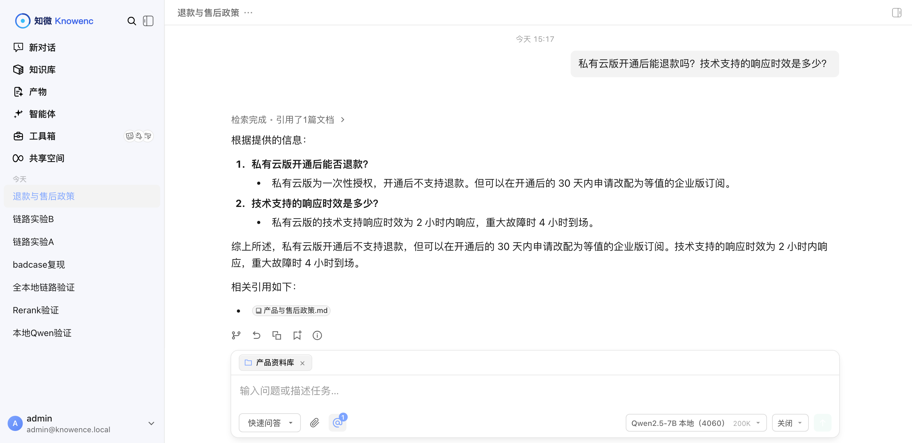

数据不出内网
文档解析、向量化、检索、生成，整条链路都跑在你自己的机器上。 接入层、编排层、存储层都在内网，没有一条请求发往外部服务。
只想先用云端跑起来也行。模型层是可插拔的，换掉接入地址即可，平台功能不受影响。
文档解析、向量化、检索、生成，整条链路都跑在你自己的机器上。 接入层、编排层、存储层都在内网，没有一条请求发往外部服务。
只想先用云端跑起来也行。模型层是可插拔的，换掉接入地址即可，平台功能不受影响。
向量与关键词两路并发召回，重排之后把原文出处回填到每条结论上。知识库没覆盖的问题，它说查不到。
对话、向量、重排三类模型独立配置，走同一套接口。换模型改一行配置，业务代码不用动。

底座是 Tencent/WeKnora（MIT）。 哪些能力来自上游、哪些是本项目完成的，这份对照写得很清楚。
模型本身不是这个产品。你用自己的模型，知微提供它们外面那层编排、检索、权限与审计。 换成别家的模型，这一层不用重写。
本地部署或云端 API 都可以，选哪个由你决定。平台不绑定任何一家。
这些不是注意事项，是真出过故障、翻了日志、定位到根因的问题。每条都记了当时是怎么找到的。
需要 Docker。本地模型走国内镜像源下载，约 2.2GB。
git clone https://github.com/moronfranklyn-lab/knowence.git cd knowence
cp .env.example .env
./scripts/download-models.sh
docker compose up -d # 打开 http://localhost:8081